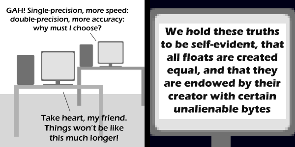

Comic JK 456
When I Feel Like It
⇤
<
?
>
⇥

⇤
<
?
>
⇥
Forum
.
RSS
.
Digg
.
Facebook
.
Reddit
.
Twitter
.
Stumbleupon
Enter your thoughts on number 456 here. Please, no spamming, trolling, or cupcakes. Your mother is endowed by her creator with certain unalienable bits. Power is Might. Love is Power. What is Might? Happy finally got rid of the Americans day!! >>Really enjoyed the mouse over >>>Agreed >>>>Who has their Independence Day on July 5th? >>>>>Algeria, Venezuala and Cape Verde! (I looked that up). >>>>>>And Armenia I liked :D But I though comparing floats for equality was never a good idea! >It's not. You can get all sorts of weird bugs even with inequality comparisons... well... unless one of them is a double... >And all free doubles shall be counted as eight, and all singles as 1/2 a free double... >>Equal rights for singles! I dream of a day when all floating-points are judged not by the size of their mantissas, but by the content of their (char). >Isn't char content = (char) a_float; pretty random in most cases? ... and to all those who are members of the Church of the SubGenius, Happy X-Day!!! Umm, aren't floating point numbers calculated on (Intel) x87 coprocessor on 80 bits anyway? (C/C++ guys: think "long double"). And cut down to 32/64 bits just to transfer the result back to memory so the speed part becomes insignificant? OMG do people still remember the 8087? Floating point MULT in only a few uSecs! ,mmlkljljnlnlknjklnkjlnkjnkljnkljnkljnkljnkljnkjnlknkjlnlknlknk weeeeeeeeeeeeeeeeeeee